掌機 - GPD Win 上蓋鋁合金版 - 更換DPad按鍵
司徒拿出一些可以使用的DPad，除了右下角那個之外(中間那個是原廠的DPad)，其餘三個是NDSL的DPad
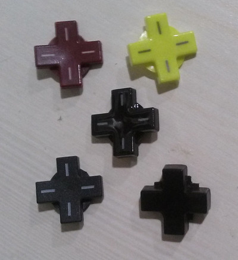
司徒也順便測試NDSL的導電膠，看看是否可以替換到GPD Win掌機身上，結果是不行的
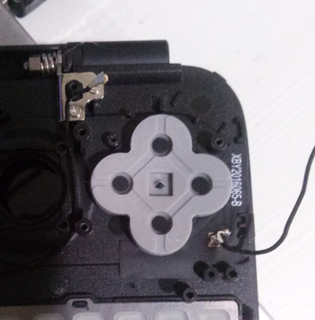
替換NDSL的DPad
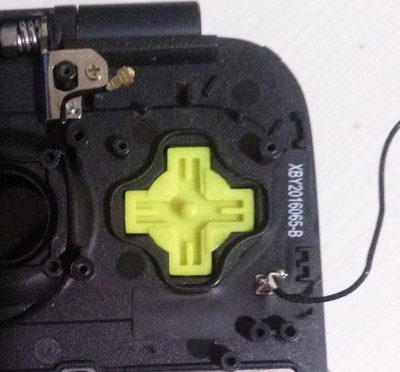
接著使用原本的導電膠
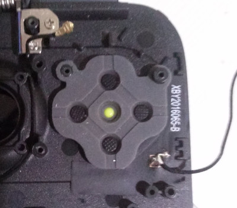
比較一下NDSL和原廠的DPad
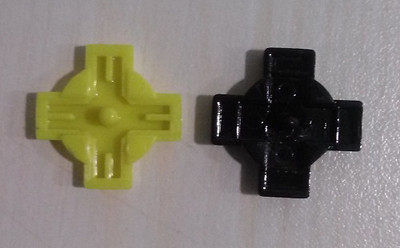
正面
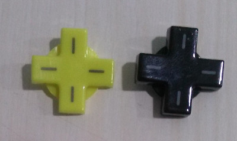
原廠DPad太過平滑
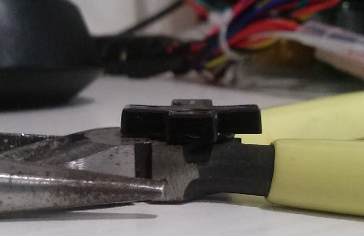
NDSL的DPad還是設計的比較符合人體工學
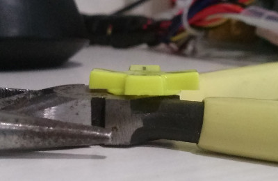
相當吻合的尺寸
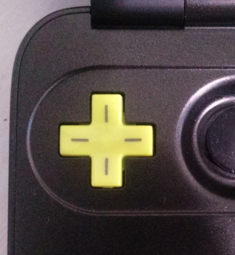
使用者如果覺得替換後的DPad太過吻合(太緊)，可以考慮使用美工刀小修邊緣即可
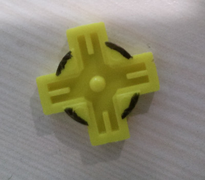
小修後的模樣
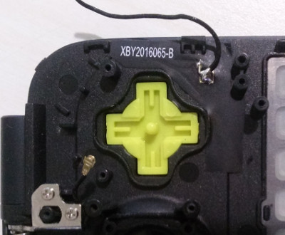
替換後，真的很好摳出絕招，不過相較於原廠DPad，NDSL的DPad會比較下凹一點
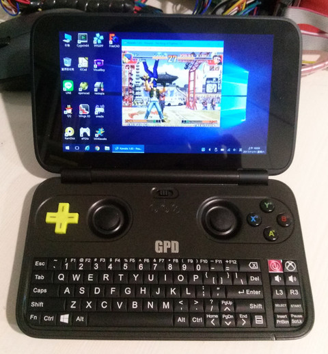
後來司徒發現，其實只要把中間墊高就可以得到更好的操作
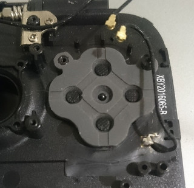
於是，司徒使用NDSL SS按鍵做修改
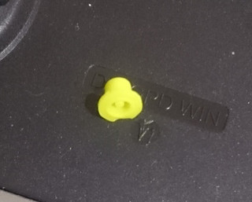
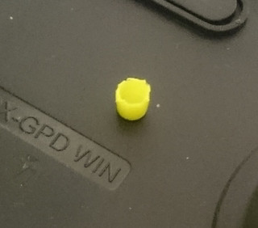
發現還是太高
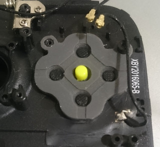
再度修改
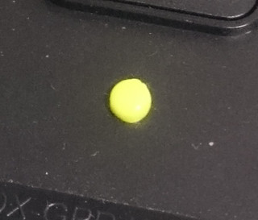
還是太高
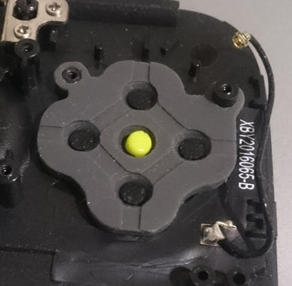
最後放棄使用SS按鍵而改用軟膠墊
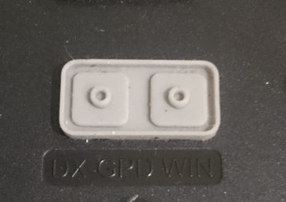
實際測試後，發現使用原廠DPad加上NDSL軟膠墊可以得到最棒的體驗
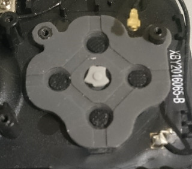